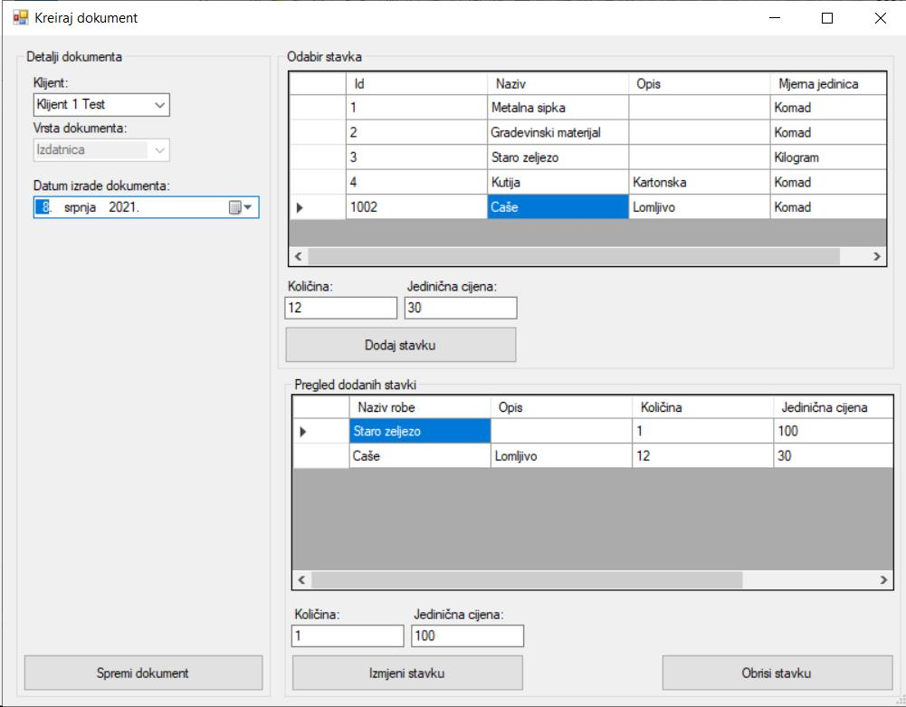

Prozor nova izdatnica sadrži kontrole za dodavanje robe kao stavke izdatnice. "Detalji dokumenta" nude na odabir klijenta od kojeg je izdatnica primljena. Odabir "Vrsta dokumenta" je isključen pošto kreiramo izdatnicu i nije potrebno mijenjati vrstu dokumenta. Prozor "Odabir stavka" prikazuje svu robu na skladištu, te se odabirom robe, unosom količine, jedinične cijene i klikom na tipku "Dodaj stavku" stavka dodaje u izdatnicu. Stavke izdatnice se pojavljuju u donjem prozoru i imaju zapisanu unesenu količinu i jediničnu cijenu, te automatski izračunatu ukupnu cijenu.
Dodanim stavkama je po potrebi moguće mijenjati količinu i jediničnu cijenu. Promjena se postiže odabirom stavke, unosom nove količine i jedinične cijene te se sprema klikom na tipku "Izmjenu stavku". Tipka "Obriši stavku" briše odabranu stavku iz popisa stavki.
Pritiskom na tipku "Spremi dokument" dokument se sprema i biti će prikazan u prozoru pregleda izdatnici.
